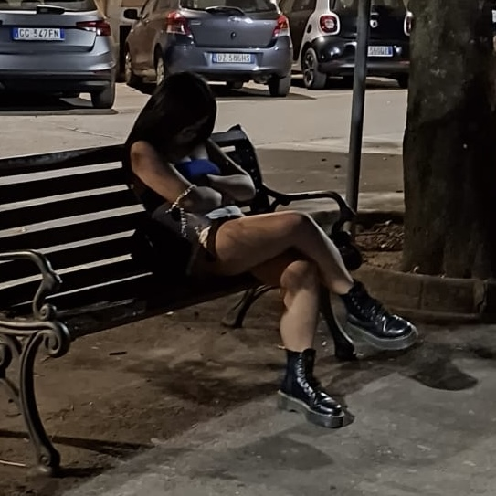
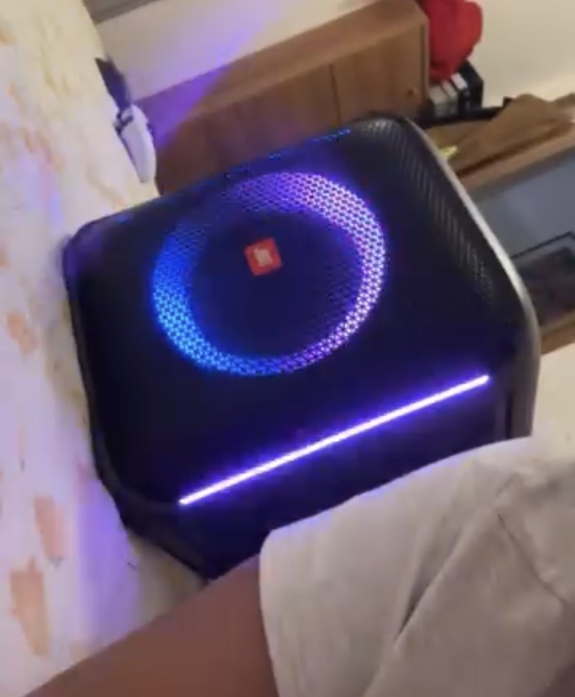

Quali sono le mie passioni?
Sinceramente non so cosa significhi veramente la parola "passione" ma credo che sia il sentimonto di piacere nel fare qualcosa. Quindi ecco 5 cose che mi piace fare:
- Dormire
- Mangiare
- Ballare
- Cantare
- Stare con le persone che amo
Io amo dormire, appena torno a casa dopo 6 ore di scuola è come una liberazione, perchè toglie la stanchezza e non mi fa pensare ai problemi. Riuscirei a dormire in qualunque posto e in qualsiasi posizione possibile.

Sinceramente non ho un buon rapporto con il cibo: ci sono delle volte in cui non mangio niente e altre in cui mangio più del dovuto. Ma quando sono stressata mi sfogo mangiando. In classe mi chiamano "scroccona" perchè chiedo sempre un morso/pezzo di quello che mangiano le mie compagne.
Non ballo tanto (quasi mai), lo faccio principalmente solo quando vado in discoteca ma mi piace farlo. Ammetto di non essere brava ma vorrei imparare così posso ballare tranquillamente la bachata e la salsa con il mio fidanzato senza sembrare un'imbranata.
Essendo filippina sono cresciuta con il karaoke in casa ed è un'attività che adoro ma che non dico mai a nessuno perchè mi vergogno. Canto solo quando sono da sola con la musica a palla con la cassa, per esempio quando mi preparo per uscire.

Quest'ultima è la più importante per me, stare insieme alle persone (famiglia e amici) mi fa sentire felice e sereno. Anche se facciamo cose semplici insieme, come parlare, ridere, uscire può diventare speciale se si è con persone a cui si vuole bene. Ti fa sentire meno solo.